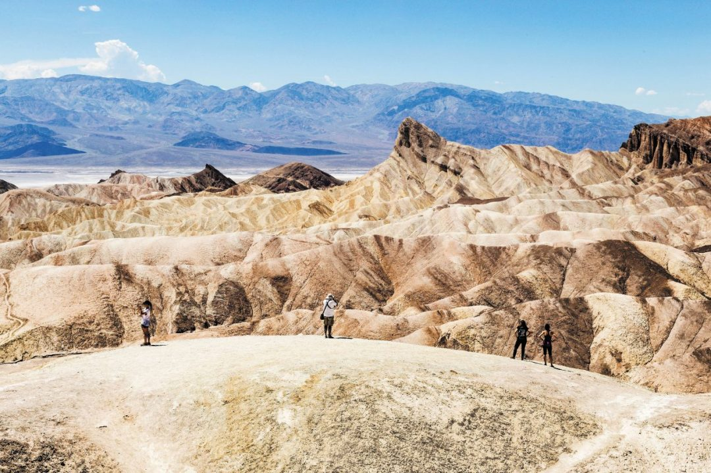
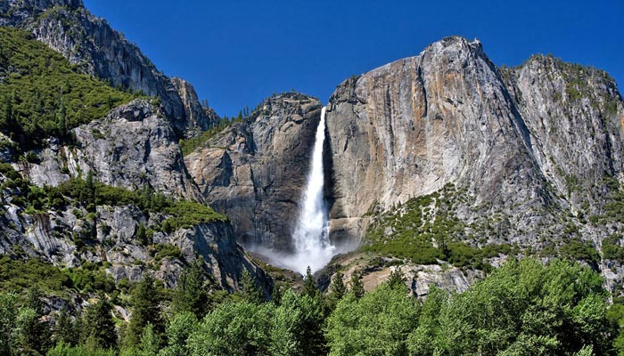

L'Oakland Bay Bridge è il ponte più lungo di San Francisco e unisce la città alla località di Oakland; si estende in senso est-ovest verso l'interno. In realtà l'Oakland Bay Bridge è costituito da due ponti successivi che si appoggiano all'isola Yerba Buena, attraversata da un tunnel. La parte occidentale è lunga 3100m, mentre quella orientale è lunga 2800m. L'arco più ampio misura 700 m, mentre l'arco del Golden Gate raggiunge i 1280m. E' stato inaugurato nel 1936, sei mesi prima del Golden State, e attualmente fa parte dell'autostrada inter-statale 80; è un tratto a pagamento (4 dollari)Che può essere percorso solo dalle auto dirette verso ovest

Per chi ama le stranezze naturali e i panorami dove l’orizzonte si estende a perdita d’occhio, la Death Valley è il parco nazionale da non perdere. Un parco da attraversare tutto in macchina in pieno stile on the road, con fermate strategiche lungo il percorso, delle vere e proprie tappe “toccata e fuga”, giusto il tempo di fare qualche foto e rientrare subito in macchina per non risentire troppo delle altissime temperature (siamo nel luogo più caldo di tutti gli States!). Per fortuna i punti notevoli della Valle della Morte sono per la maggior parte godibili a poca distanza dalle aree di parcheggio, inoltre un aspetto affascinante di questo parco è proprio l’atto stesso di attraversarlo in auto, l’impressione è quella di penetrare nelle viscere della terra o essere improvvisamente approdati su un altro pianeta Se siete degli appassionati di cinema,non perdetevi le mani e le impronte più famose nei pressi del bizzarro Teatro Cinese di Grauman,dove assistere a interessanti proiezionie incontrare molti sosia di star del mondo dello spettacolo.Questo è il luogo delle innumerevoli anteprimee serate di gala.
Altra tappa praticamente obbligata fra le cose da vedere in California, il parco di Yosemite è una delle grandi meraviglie naturali dello Stato, dove imponenti monoliti rocciosi, cascate roboanti, sequoie giganti, splendenti laghi alpini, vallate lussureggianti e strade scenografiche formano un panorama a cui è difficile restare insensibili. L’intera area naturale è molto grande e spostarsi all’interno del parco richiede tempo, inoltre alcune strade e accessi chiudono in specifici periodi dell’anno, dunque la visita richiede un’attenta pianificazione. Per questo vi raccomando di seguire i nostri consigli, che trovate nella nostra sezione dedicata al parco
